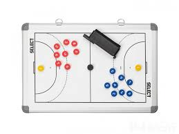
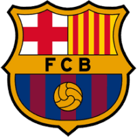
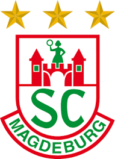
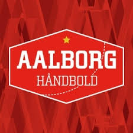

Pravidla hry
Házená se hraje mezi dvěma týmy, každý se skládá ze sedmi hráčů. Cílem je vstřelit co nejvíce gólů do soupeřovy brány. Hraje se 60 minut, při čemž má každý tým k dispozici 3 time-outy .
Slavné týmy
Některé z nejlepších týmů v historii házené zahrnují Norsko, Francii a Dánsko, které dominovaly na mezinárodních turnajích. Avšak mezi nejlepší týmy na klubové úrovni patří Barcelona (ESP), Aalborg Handboll (DEN), SCM Magdeburg (GER)
  